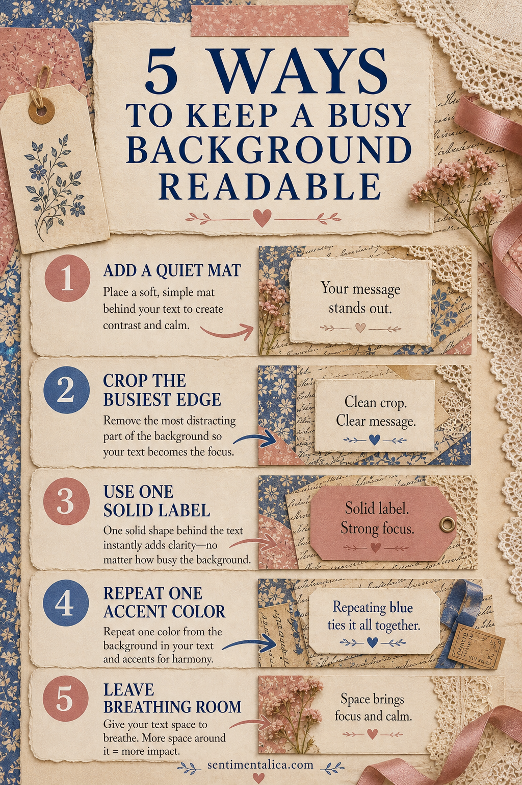
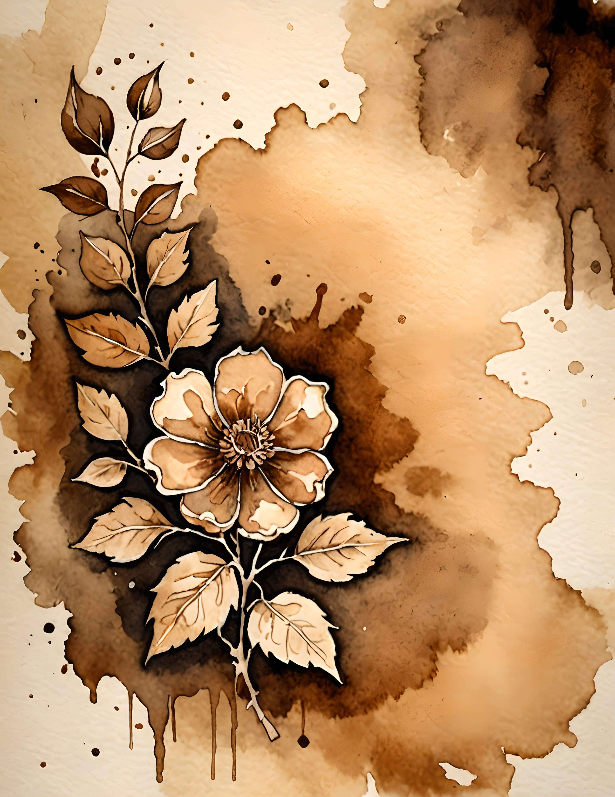

Decorative paper can be the most exciting part of a card or journal page—and the reason the finished message becomes difficult to read. The answer is not to cover the pattern completely. It is to create a small visual pause where the words can lead.

1. Add a quiet mat
Place a plain cream, vellum or lightly stained shape directly behind the greeting. Let the mat extend beyond the words on every side. A narrow border looks accidental; a generous one feels intentional and gives the eye somewhere to rest.
2. Crop the busiest edge
Before trimming the background, move your card-sized window over the print. Often one corner contains more contrast than the rest. Cropping that section away can solve the problem without adding another layer.
3. Use one solid label
A tag, ticket or simple rectangle can hold the message. Choose a solid color already present in the artwork, but select its lighter or darker version so the text has enough contrast. Avoid adding a second patterned label.
4. Repeat one accent color
If the greeting is printed in blue, repeat blue once in a ribbon, tiny flower or stitch. That repetition connects the message to the background and prevents the label from looking pasted on at the last moment.
5. Leave breathing room
Space is a design material. Keep embellishments away from the greeting and avoid filling every corner. One focal cluster plus one small echo is usually stronger than four equally decorated edges.

Test the message before gluing
Set the unfinished piece on a table and step back. If you read the pattern first and the greeting second, strengthen the mat or simplify the surrounding cluster. If you read only the greeting and no longer notice the paper, reduce the mat slightly.
The goal is a clear order: message first, focal detail second, background third. Decorative paper still contributes atmosphere even when it is not the loudest element.